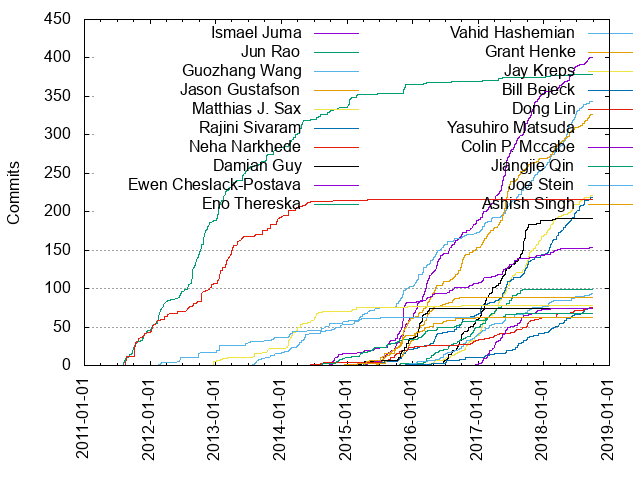

Authors
| Author | Commits (%) | + lines | - lines | First commit | Last commit | Age | Active days | # by commits |
|---|
| Ismael Juma | 401 (7.32%) | 38558 | 45974 | 2015-04-01 | 2018-09-25 | 1272 days, 11:47:35 | 291 | 1 |
| Jun Rao | 378 (6.90%) | 69151 | 27353 | 2011-08-04 | 2018-05-25 | 2485 days, 21:42:29 | 260 | 2 |
| Guozhang Wang | 343 (6.26%) | 63966 | 50252 | 2013-07-25 | 2018-09-11 | 1874 days, 6:18:17 | 279 | 3 |
| Jason Gustafson | 327 (5.97%) | 89846 | 46261 | 2015-06-12 | 2018-09-26 | 1201 days, 20:01:01 | 262 | 4 |
| Matthias J. Sax | 221 (4.03%) | 58735 | 29047 | 2016-03-09 | 2018-09-19 | 924 days, 16:15:59 | 167 | 5 |
| Rajini Sivaram | 218 (3.98%) | 37108 | 9023 | 2015-04-04 | 2018-09-17 | 1261 days, 19:16:29 | 182 | 6 |
| Neha Narkhede | 216 (3.94%) | 43461 | 60380 | 2011-08-18 | 2015-04-25 | 1345 days, 21:14:10 | 146 | 7 |
| Damian Guy | 191 (3.49%) | 60483 | 18513 | 2016-04-25 | 2018-03-08 | 682 days, 2:05:54 | 138 | 8 |
| Ewen Cheslack-Postava | 153 (2.79%) | 40615 | 11216 | 2014-09-26 | 2018-09-10 | 1445 days, 12:29:54 | 119 | 9 |
| Eno Thereska | 99 (1.81%) | 16934 | 3966 | 2015-10-21 | 2017-09-04 | 683 days, 20:24:01 | 86 | 10 |
| Vahid Hashemian | 93 (1.70%) | 11839 | 5256 | 2015-12-08 | 2018-09-25 | 1021 days, 20:10:33 | 84 | 11 |
| Grant Henke | 89 (1.62%) | 7722 | 8285 | 2015-04-06 | 2017-02-09 | 675 days, 5:20:31 | 66 | 12 |
| Jay Kreps | 78 (1.42%) | 30524 | 11907 | 2012-12-16 | 2016-09-28 | 1382 days, 5:24:31 | 64 | 13 |
| Bill Bejeck | 76 (1.39%) | 13796 | 4419 | 2015-11-21 | 2018-09-19 | 1032 days, 20:19:24 | 69 | 14 |
| Dong Lin | 75 (1.37%) | 11995 | 4397 | 2014-06-10 | 2018-09-16 | 1558 days, 7:25:57 | 68 | 15 |
| Yasuhiro Matsuda | 74 (1.35%) | 18292 | 4237 | 2015-02-20 | 2016-04-04 | 408 days, 22:24:14 | 51 | 16 |
| Colin P. Mccabe | 74 (1.35%) | 30422 | 5945 | 2016-12-16 | 2018-02-05 | 415 days, 19:06:38 | 63 | 17 |
| Jiangjie Qin | 68 (1.24%) | 10484 | 3566 | 2014-08-13 | 2018-02-01 | 1267 days, 19:49:32 | 65 | 18 |
| Joe Stein | 62 (1.13%) | 6265 | 57492 | 2012-02-16 | 2015-07-07 | 1236 days, 13:54:24 | 52 | 19 |
| Ashish Singh | 62 (1.13%) | 4626 | 987 | 2014-12-16 | 2016-12-17 | 731 days, 7:48:43 | 51 | 20 |
These didn't make it to the top: Manikumar Reddy O, Manikumar Reddy, Apurva Mehta, Joel Koshy, Gwen Shapira, Edward Jay Kreps, John Roesler, Sriharsha Chintalapani, Geoff Anderson, Randall Hauch, Liquan Pei, Sriram Subramanian, Mickael Maison, Ben Stopford, Swapnil Ghike, Onur Karaman, Konstantine Karantasis, Colin Patrick McCabe, Anna Povzner, huxi, Aditya Auradkar, Michael G. Noll, tedyu, Xavier Léauté, Shikhar Bhushan, Parth Brahmbhatt, Manikumar reddy O, Joel Jacob Koshy, Jeyhun Karimov, huxihx, Paolo Patierno, Kamal C, Joan Goyeau, Flavio Junqueira, Edoardo Comar, Dhruvil Shah, Armin Braun, Arjun Satish, Robert Yokota, Mayuresh Gharat, John Fung, Joel Hamill, Balint Molnar, Chia-Ping Tsai, Viktor Somogyi, Stanislav Kozlovski, Sasaki Toru, Tom Bentley, Timothy Chen, Jeremy Custenborder, Jeff Klukas, Dustin Cote, David Jacot, Andy Coates, ppatierno, dan norwood, Chris Burroughs, Stevo Slavic, Roger Hoover, Michal Borowiecki, Magnus Reftel, Magnus Edenhill, Jeff Widman, James Cheng, Jaikiran Pai, Filipe Agapito, radai-rosenblatt, amethystic, Yuto Kawamura, Tao Xiao, Manjula K, Magesh Nandakumar, Jorge Quilcate Otoya, Jagadesh Adireddi, Edward Ribeiro, Dana Powers, Andras Beni, umesh chaudhary, Tim Brooks, Stevo Slavić, Soenke Liebau, Sam Meder, Richard Yu, Mathieu Fenniak, Koen De Groote, Jon Lee, Jin Xing, Jimin Hsieh, Ivan Lyutov, Alex Loddengaard, manjuapu, flavio junqueira, bbejeck, Xi Hu, Tong Li, Tommy Becker, Stig Rohde Døssing, Ryan P, Ron Dagostino, Rekha Joshi, MayureshGharat, Lucas Wang, Kim Christensen, Kaufman Ng, Joshi, Jakub Scholz, Ishita Mandhan, Florian Hussonnois, Dmitry Minkovsky, Derrick Or, Christian Posta, Chris Egerton, Boyang Chen, Bharat Viswanadham, Attila Sasvari, Anton Karamanov, ying-zheng, ro7m, jaikiran pai, Zhanxiang (Patrick) Huang, Yaguo Zhou, Xin Wang, Tom Crayford, Todd Palino, Sönke Liebau, Sebastien Launay, Sean McCauliff, Sandor Murakozi, RichardYuSTUG, Raghav Kumar Gautam, Radai Rosenblatt, Prashanth Menon, Max Zheng, Matthias Wessendorf, Lee Dongjin, Kyle Winkelman, Jonathan Natkins, Hojjat Jafarpour, Hamidreza Afzali, Gunnar Morling, Evgeny Veretennikov, David Arthur, Dan Norwood, ConcurrencyPractitioner, Chen Zhu, Bryan Baugher, Bernard Leach, Andrey Dyachkov, Andrew Olson, Allen Wang, Alexey Ozeritsky, zhuchen1018, wushujames, siva santhalingam, sharad.develop, rnpridgeon, lisa2lisa, khairy, jholoman, himani1, gitlw, fredfp, edoardo, dejan2609, benstopford, bartdevylder, asutosh936, Yifan Ying, Xavier Léauté, Wladimir Schmidt, Vitaly Pushkar, Ted Yu, Ted Malaska, Sumit Arrawatia, Steven Wu, Stephane Maarek, Som Sahu, Siva Santhalingam, Satish Duggana, Samuel Taylor, Ryan Pridgeon, Rohan, Rajasekar Elango, Praveen Devarao, Prabhat Kashyap, Pierre-Yves Ritschard, Phil Hargett, Nikki Thean, Nicu Marasoiu, Michael Andre Pearce, Maysam Yabandeh, Matt Farmer, Mats Julian Olsen, Mario Molina, Mariam John, Lihua Xin, Kostya Golikov, Konrad, Kevin Lu, Kamil Szymanski, Kamal Chandraprakash, Jozef Koval, JieFang.He, Jiangjie (Becket) Qin, Jeff Holoman, Jarek Jarcec Cecho, Jakub Nowak, Jakub Dziworski, Jacek Laskowski, Honghai Chen, Himani Arora, Henry Saputra, Henry Cai, Greg Fodor, Gavin McDonald, Elias Levy, Derek Chen-Becker, David Glasser, Cosmin Lehene, Clemens Valiente, Christopher Freeman, Bob Barrett, Benedict Jin, BalajiSeshadri, Arun Mahadevan, Antony Stubbs, Andrew Otto, Andrea Cosentino, Alexis Midon, Alexey Ozeritskiy, Alexander Pakulov, Alex Dunayevsky, Adem Efe Gencer, Adam Kunicki, ybyzek, yaphet, yaojuncn, xinzhg, xinlihua, xin, wangzzu, wangshao, vahidhashemian, vagrant, unknown, uncleGen, uchan-nos, tomdearman, taekyung, sven0726, sunnykrgupta, steve, simplesteph, shuguo zheng, shikhar, sharad-develop, sahil kharb, sachinbhalekar, radzish, pilo, pengwei-li, paul mackles, parafiend, ouyangliduo, oleg, okumin, nprad, nixsticks, nicu marasoiu, nafshartous, mulvenna, mgharat, maytals, manuzhang, manasvigupta, lvfangmin, lucapette, lperry, leisore, kota-uchida, kenji yoshida, jqin, jozi-k, jinxing, jameschien, hmcl, hejiefang, hashangayasri, gosubpl, glikson, gaob13, fpj, fedosov-alexander, emmanuel Harel, ekenny, drunkedcat, dongeforever, dokovan, deragon, dasl, coscale_kdegroot, cmolter, cburroughs, asingh, anukin, Zhiqiang He, Zack Dever, Yukun Guo, Yu-Jhe, Yu Yang, Yu, Yishun Guan, Yaswanth Kumar, Yang Wei, Xiongqi Wesley Wu, Xin Li, Xianyang Liu, Wim Van Leuven, William Yu, William Thurston, Will Marshall, Will Droste, Wan Wenli, Vogeti, Vladislav Pernin, Vladimír Kleštinec, Vladimir Tretyakov, Vivek Madani, Valentino Proietti, Umesh Chaudhary, UVN, Tu Yang, Travis Wellman, Tomasz Nurkiewicz, Tom Rybak, Tom Lee, Tom Graves, Tom Dearman, Tobias Gies, Tim Carey-Smith, Thomas Leplus, Thibaud Chardonnens, Theo, Thanasis Katsadas, Tanvi Jaywant, Sébastien Launay, Surabhi Dixit, Sumant Tambe, Study, Stuart Perks, Stig, Steven Schlansker, Steven Aerts, Stephane Roset, Simon Clark, Shun Takebayashi, Shuai Zhang, Sebastian Geller, Sebastian Gavril, Sebastian Bauersfeld, Sean Glover, Scott Ferguson, Scott, Satendra kumar, Satendra Kumar, Sandesh K, Samuel Julius Hecht, Sam Shah, Sam Lendle, Sagar Chavan, Sachin Mittal, Roman Khlebnov, Romain Hardouin, Rollulus, Rohan Desai, Robin Moffatt, Richard Whaling, Raman Gupta, Rafael Winterhalter, Qihuang Zheng, Qian Zheng, Proneet Verma, Prasanna Gautam, Pranav Maniar, Piotr Szwed, Pierre Coquentin, Philp K. Warren, Philippe Derome, Peter Pham, Peter Davis, Paul Cavallaro, Patrik Erdes, Panuwat Anawatmongkhon, P. Thorpe, Olivier Girardot, Nihed Bbarek, Nick Travers, Nick Pillitteri, Nick Chiu, Nathan Brown, Narendra kumar, Nafer Sanabria, Mutasem Aldmour, Muneyuki Noguchi, Moritz Siuts, Moritz Schwörer, Milosz Tanski, Mikkin, Michal Dziemianko, Michael Schiff, Michael Blume, Michael Arndt, Michael André Pearce, Micah Zoltu, Maytee Chinavanichkit, Mayank Tankhiwale, Matthew Bruce, Matt McClure, Matt Fluet, Martin Lemanski, Martin Kleppmann, Marko Stanković, Mark Rose, Mark Grover, Marco Ebert, Marc Chung, Maksim Logvinenko, Maciej Bryński, MURAKAMI Masahiko, Luke Zaparaniuk, Luciano Afranllie, LoneRifle, Logan Buckley, Liju John, Laurier Mantel, Krzysztof Szafrański, Kishore Senji, Kiran Pillarisetty, Kevin Sweeney, Kevin Lafferty, Kenji Yoshida, Kelvin Rutt, Kamil Szymański, Kamal, Ján Koščo, Jun He, Json Tu, Joris Van Remoortere, Jorge Quilcate, Jonathan Monette, Jonathan Creasy, Jonathan Bond, Jon Riehl, Jon Freedman, Johnny Lim, Joel Dice, Joe Crobak, Jimmy Casey, Jim Galasyn, Jie Huang, Jianwen Wang, Jesse Anderson, Jendrik Poloczek, Jeff Maxwell, Jeff Chao, Jean-Philippe Daigle, Jean-Francois Im, Jason Rosenberg, Jarek Rudzinski, Jan Lukavsky, Jan Filipiak, Jan Burkhardt, James Oliver, James Chien, Jakob Homan, Jakob Glen Homan, Ivan Simoneko, Ivan Babrou, Ivan A. Melnikov, Igor Stepanov, Igor Kostiakov, Hugo Louro, Hooman Broujerdi, Holden Karau, Hikiko Murakami, Hao Chen, Gunju Ko, Guangxian, Guan Liao, Gregor Uhlenheuer, Gitomain, Gilles Degols, Geoffrey Anderson, Gavrie Philipson, Gantigmaa Selenge, GabrielNicolasAvellaneda, Gabriel Zhang, Gabriel Avellaneda, Frank Scholten, Francois Visconte, Francois Saint-Jacques, Flutra Osmani, Flavien Raynaud, Filipe Azevedo, Fedor Bobin, Fangmin Lv, Evgeny Vereshchagin, Evelina Stepanova, Eugene Sevastyanov, Eugen Feller, Erkan Unal, Erik Kringen, Eric Wasserman, Eric Olander, Emanuele Cesena, Elyahou, Eamon Zhang, Duncan Sands, Drausin Wulsin, Dragos Manolescu, Dongjoon Hyun, Dmytro Kostiuchenko, Dmitry Stratiychuk, Dionysis Grigoropoulos, Dhwani Katagade, Detharon, Denise Fernandez, Debasish Ghosh, Davor Poldrugo, David Stein, David Corley, David Chen, Dave Parfitt, Dave Cromberge, Dave Beech, Dark, Daniel Wojda, Daniel Shuy, Daniel Compton, Dale Peakall, Cory Kolbeck, Colin B, Christopher L. Shannon, Chris Pinola, Chris Cope, Chris Black, Chen Shangan, Charly Molter, Bruce Szalwinski, Brandon Kirchner, Blake Miller, Ben Fleis, Balaji Seshadri, BINLEI XUE, Aviem Zur, Avi Flax, Atul Soman, Attila Kreiner, Arup Malakar, Andy Chambers, Andy Bryant, Andrii Biletskyi, Andrey Neporada, Andrew Stevenson, Andras Katona, Anatoly Fayngelerin, Amit Daga, Allen Xiang, Alexey Romanchuk, Alex Sherwin, Alex Good, Alex Glikson, Alex D, Alex Couture-Beil, Aleksei Izmalkin, Alan Vasile, Alan Lee, Akhilesh Naidu, Akash Sethi, Ailing Zhang, Ahmy Yulrizka, Ahmed Al Mehdi, Aegeaner, Adrian McCague, Abhishek Mendhekar, Aaron Coburn, 1ambda

Only top 20 authors shown
Only top 20 authors shown
| Month | Author | Commits (%) | Next top 5 | Number of authors |
|---|
| 2018-09 | Manikumar Reddy O | 7 (10.61% of 66) | John Roesler, Jason Gustafson, Ismael Juma, Manikumar Reddy, Rajini Sivaram | 32 |
| 2018-08 | Manikumar Reddy O | 13 (10.57% of 123) | John Roesler, Jason Gustafson, Rajini Sivaram, Stanislav Kozlovski, Bill Bejeck | 49 |
| 2018-07 | Rajini Sivaram | 9 (13.43% of 67) | Guozhang Wang, Matthias J. Sax, Manikumar Reddy O, Ismael Juma, Dhruvil Shah | 32 |
| 2018-06 | Guozhang Wang | 15 (9.93% of 151) | Ismael Juma, Rajini Sivaram, Matthias J. Sax, John Roesler, Andy Coates | 45 |
| 2018-05 | Guozhang Wang | 21 (17.95% of 117) | Rajini Sivaram, Jason Gustafson, Ismael Juma, Joan Goyeau, Matthias J. Sax | 50 |
| 2018-04 | Guozhang Wang | 9 (8.74% of 103) | Colin Patrick McCabe, Manikumar Reddy O, Rajini Sivaram, Jason Gustafson, John Roesler | 42 |
| 2018-03 | Rajini Sivaram | 9 (8.65% of 104) | Jason Gustafson, Guozhang Wang, Colin Patrick McCabe, Ismael Juma, huxi | 44 |
| 2018-02 | Rajini Sivaram | 12 (10.00% of 120) | Matthias J. Sax, Jason Gustafson, Guozhang Wang, Randall Hauch, Konstantine Karantasis | 58 |
| 2018-01 | Guozhang Wang | 11 (9.73% of 113) | Matthias J. Sax, Rajini Sivaram, Joel Hamill, Vahid Hashemian, Konstantine Karantasis | 63 |
| 2017-12 | Matthias J. Sax | 9 (15.52% of 58) | Ismael Juma, Guozhang Wang, Jason Gustafson, Rajini Sivaram, Manikumar Reddy | 24 |
| 2017-11 | Ismael Juma | 14 (18.18% of 77) | Matthias J. Sax, Guozhang Wang, Colin P. Mccabe, tedyu, Rajini Sivaram | 30 |
| 2017-10 | Ismael Juma | 16 (12.21% of 131) | Matthias J. Sax, Manikumar Reddy, Rajini Sivaram, Guozhang Wang, Dong Lin | 37 |
| 2017-09 | Damian Guy | 33 (20.37% of 162) | Ismael Juma, Matthias J. Sax, Rajini Sivaram, Jason Gustafson, Apurva Mehta | 48 |
| 2017-08 | Guozhang Wang | 12 (10.53% of 114) | Jason Gustafson, Damian Guy, Ismael Juma, Colin P. Mccabe, Eno Thereska | 34 |
| 2017-07 | Matthias J. Sax | 9 (9.47% of 95) | Ismael Juma, Eno Thereska, Damian Guy, Guozhang Wang, Ewen Cheslack-Postava | 39 |
| 2017-06 | Jason Gustafson | 32 (15.38% of 208) | Ismael Juma, Apurva Mehta, Matthias J. Sax, Rajini Sivaram, Guozhang Wang | 44 |
| 2017-05 | Ismael Juma | 28 (14.21% of 197) | Jason Gustafson, Damian Guy, Rajini Sivaram, Colin P. Mccabe, Apurva Mehta | 53 |
| 2017-04 | Matthias J. Sax | 17 (17.71% of 96) | Ismael Juma, Jason Gustafson, Colin P. Mccabe, Eno Thereska, Damian Guy | 30 |
| 2017-03 | Damian Guy | 11 (10.28% of 107) | Colin P. Mccabe, Ismael Juma, Jason Gustafson, Eno Thereska, Vahid Hashemian | 40 |
| 2017-02 | Damian Guy | 18 (16.98% of 106) | Jason Gustafson, Eno Thereska, Colin P. Mccabe, Ismael Juma, Guozhang Wang | 41 |
| 2017-01 | Matthias J. Sax | 21 (13.38% of 157) | Rajini Sivaram, Damian Guy, Ismael Juma, Jason Gustafson, Guozhang Wang | 51 |
| 2016-12 | Damian Guy | 9 (10.23% of 88) | Ismael Juma, Eno Thereska, Matthias J. Sax, Vahid Hashemian, Jason Gustafson | 39 |
| 2016-11 | Damian Guy | 7 (10.14% of 69) | Ismael Juma, Matthias J. Sax, Konstantine Karantasis, Ewen Cheslack-Postava, Eno Thereska | 37 |
| 2016-10 | Jason Gustafson | 13 (15.12% of 86) | Matthias J. Sax, Vahid Hashemian, Rajini Sivaram, Ismael Juma, Damian Guy | 35 |
| 2016-09 | Damian Guy | 19 (17.59% of 108) | Jason Gustafson, Rajini Sivaram, Ben Stopford, Ismael Juma, Vahid Hashemian | 35 |
| 2016-08 | Ismael Juma | 9 (10.23% of 88) | Jason Gustafson, Damian Guy, Grant Henke, Rajini Sivaram, Guozhang Wang | 43 |
| 2016-07 | Ismael Juma | 8 (10.67% of 75) | Damian Guy, Eno Thereska, Guozhang Wang, Ewen Cheslack-Postava, Vahid Hashemian | 39 |
| 2016-06 | Ismael Juma | 7 (9.09% of 77) | Guozhang Wang, Vahid Hashemian, Jason Gustafson, Damian Guy, Sebastien Launay | 40 |
| 2016-05 | Ismael Juma | 17 (14.41% of 118) | Liquan Pei, Guozhang Wang, Rajini Sivaram, Jason Gustafson, Geoff Anderson | 42 |
| 2016-04 | Jason Gustafson | 13 (12.38% of 105) | Liquan Pei, Grant Henke, Ismael Juma, Guozhang Wang, Rajini Sivaram | 32 |
| 2016-03 | Ismael Juma | 21 (15.79% of 133) | Grant Henke, Jason Gustafson, Guozhang Wang, Jiangjie Qin, Yasuhiro Matsuda | 38 |
| 2016-02 | Yasuhiro Matsuda | 24 (23.30% of 103) | Ismael Juma, Guozhang Wang, Jason Gustafson, Grant Henke, Jiangjie Qin | 33 |
| 2016-01 | Ismael Juma | 19 (19.00% of 100) | Grant Henke, Guozhang Wang, Yasuhiro Matsuda, David Jacot, Ashish Singh | 40 |
| 2015-12 | Grant Henke | 12 (14.63% of 82) | Jason Gustafson, Ismael Juma, Yasuhiro Matsuda, Jin Xing, Vahid Hashemian | 31 |
| 2015-11 | Ewen Cheslack-Postava | 33 (18.54% of 178) | Jason Gustafson, Ismael Juma, Guozhang Wang, Yasuhiro Matsuda, Jun Rao | 32 |
| 2015-10 | Ismael Juma | 14 (11.20% of 125) | Ewen Cheslack-Postava, Yasuhiro Matsuda, Guozhang Wang, Jason Gustafson, Rajini Sivaram | 29 |
| 2015-09 | Ismael Juma | 8 (14.04% of 57) | Jason Gustafson, Parth Brahmbhatt, Dong Lin, Ashish Singh, Jiangjie Qin | 21 |
| 2015-08 | Ewen Cheslack-Postava | 8 (13.56% of 59) | Ismael Juma, Jason Gustafson, Stevo Slavić, Jiangjie Qin, Grant Henke | 24 |
| 2015-07 | Ashish Singh | 9 (18.00% of 50) | Jason Gustafson, Ismael Juma, Dong Lin, Manikumar Reddy, Joel Koshy | 22 |
| 2015-06 | Manikumar Reddy | 6 (18.75% of 32) | Gwen Shapira, Jun Rao, Jason Gustafson, Guozhang Wang, Yasuhiro Matsuda | 22 |
| 2015-05 | Jiangjie Qin | 4 (16.67% of 24) | Joel Koshy, Guozhang Wang, Sriharsha Chintalapani, Onur Karaman, Ismael Juma | 14 |
| 2015-04 | Gwen Shapira | 6 (11.11% of 54) | Rajini Sivaram, Yasuhiro Matsuda, Ismael Juma, Guozhang Wang, Ewen Cheslack-Postava | 30 |
| 2015-03 | Guozhang Wang | 9 (30.00% of 30) | Joel Koshy, Jiangjie Qin, Sriharsha Chintalapani, Joe Stein, Gwen Shapira | 11 |
| 2015-02 | Jun Rao | 4 (11.76% of 34) | Joel Koshy, Jay Kreps, Guozhang Wang, Aditya Auradkar, Tong Li | 16 |
| 2015-01 | Jun Rao | 12 (33.33% of 36) | Manikumar Reddy, jaikiran pai, Joel Koshy, Joe Stein, Jiangjie Qin | 13 |
| 2014-12 | Manikumar Reddy | 2 (11.11% of 18) | Joe Stein, Jiangjie Qin, dokovan, Raman Gupta, Jun Rao | 15 |
| 2014-11 | Jiangjie Qin | 4 (19.05% of 21) | Ewen Cheslack-Postava, Guozhang Wang, Manikumar Reddy, Jun Rao, Vladimir Tretyakov | 11 |
| 2014-10 | Ewen Cheslack-Postava | 9 (24.32% of 37) | Sriharsha Chintalapani, Guozhang Wang, Manikumar Reddy, Jun Rao, Jiangjie Qin | 18 |
| 2014-09 | Jun Rao | 4 (14.81% of 27) | Joe Stein, Guozhang Wang, BalajiSeshadri, nicu marasoiu, Stevo Slavic | 19 |
| 2014-08 | Joe Stein | 4 (16.67% of 24) | Jun Rao, Jonathan Natkins, Dong Lin, Jiangjie Qin, Guozhang Wang | 13 |
| 2014-07 | Jay Kreps | 10 (35.71% of 28) | Manikumar Reddy, Jun Rao, Sriharsha Chintalapani, Nicu Marasoiu, Joe Stein | 13 |
| 2014-06 | Sriharsha Chintalapani | 6 (37.50% of 16) | Jay Kreps, Timothy Chen, Sebastian Geller, Neha Narkhede, Jun Rao | 9 |
| 2014-05 | Sriharsha Chintalapani | 7 (24.14% of 29) | Guozhang Wang, Neha Narkhede, Timothy Chen, Jun Rao, Joel Koshy | 10 |
| 2014-04 | Jun Rao | 15 (31.25% of 48) | Jay Kreps, Guozhang Wang, Joel Koshy, Stevo Slavic, Timothy Chen | 8 |
| 2014-03 | Jun Rao | 8 (26.67% of 30) | Jay Kreps, Neha Narkhede, Timothy Chen, Joel Koshy, Joe Stein | 9 |
| 2014-02 | Jay Kreps | 16 (32.00% of 50) | Jun Rao, Neha Narkhede, Guozhang Wang, Joe Stein, Sriram Subramanian | 11 |
| 2014-01 | Neha Narkhede | 3 (20.00% of 15) | Jun Rao, Guozhang Wang, Sriram Subramanian, Philp K. Warren, Joel Koshy | 11 |
| 2013-12 | Neha Narkhede | 8 (44.44% of 18) | Sriram Subramanian, Jun Rao, Swapnil Ghike, Guozhang Wang | 5 |
| 2013-11 | Sriram Subramanian | 7 (24.14% of 29) | Neha Narkhede, Jun Rao, Swapnil Ghike, Joe Stein, Guozhang Wang | 9 |
| 2013-10 | Jun Rao | 10 (28.57% of 35) | Jay Kreps, Sriram Subramanian, Guozhang Wang, Neha Narkhede, Swapnil Ghike | 13 |
| 2013-09 | Neha Narkhede | 5 (31.25% of 16) | Jun Rao, Christopher Freeman, Sam Meder, Rajasekar Elango, Joe Stein | 8 |
| 2013-08 | Guozhang Wang | 7 (28.00% of 25) | Swapnil Ghike, Sam Meder, Joel Koshy, Neha Narkhede, Jun Rao | 10 |
| 2013-07 | Jun Rao | 3 (15.79% of 19) | John Fung, Jay Kreps, Swapnil Ghike, Sriram Subramanian, Joel Koshy | 9 |
| 2013-06 | Jun Rao | 9 (50.00% of 18) | Joe Stein, Sriram Subramanian, Neha Narkhede, Sam Meder, Joel Koshy | 6 |
| 2013-05 | Jun Rao | 7 (36.84% of 19) | Neha Narkhede, Joel Koshy, Phil Hargett, Milosz Tanski, John Fung | 7 |
| 2013-04 | Neha Narkhede | 12 (42.86% of 28) | Jun Rao, Swapnil Ghike, Sriram Subramanian, Joel Koshy, Cosmin Lehene | 8 |
| 2013-03 | Neha Narkhede | 14 (33.33% of 42) | Swapnil Ghike, Jun Rao, John Fung, Sriram Subramanian, Jay Kreps | 7 |
| 2013-02 | Neha Narkhede | 12 (35.29% of 34) | Jun Rao, Swapnil Ghike, Sriram Subramanian, Sam Shah, Jay Kreps | 7 |
| 2013-01 | Jun Rao | 26 (38.81% of 67) | Neha Narkhede, Joe Stein, Joel Koshy, Jay Kreps, Sriram Subramanian | 12 |
| 2012-12 | Edward Jay Kreps | 10 (35.71% of 28) | Neha Narkhede, Jay Kreps, Swapnil Ghike, Jun Rao, John Fung | 9 |
| 2012-11 | Jun Rao | 14 (48.28% of 29) | Neha Narkhede, Edward Jay Kreps, Joel Jacob Koshy, Gavin McDonald | 5 |
| 2012-10 | Jun Rao | 27 (47.37% of 57) | Neha Narkhede, Edward Jay Kreps, Joel Jacob Koshy, Joe Stein | 5 |
| 2012-09 | Jun Rao | 18 (60.00% of 30) | Joe Stein, Neha Narkhede, Joel Jacob Koshy, Prashanth Menon | 5 |
| 2012-08 | Jun Rao | 23 (69.70% of 33) | Neha Narkhede, Edward Jay Kreps, Joel Jacob Koshy | 4 |
| 2012-07 | Jun Rao | 8 (50.00% of 16) | Neha Narkhede, Edward Jay Kreps, Joel Jacob Koshy | 4 |
| 2012-06 | Jun Rao | 9 (56.25% of 16) | Joe Stein, Prashanth Menon, Joel Jacob Koshy | 4 |
| 2012-05 | Neha Narkhede | 3 (50.00% of 6) | Prashanth Menon, Jun Rao, Joe Stein | 4 |
| 2012-04 | Jun Rao | 4 (50.00% of 8) | Neha Narkhede, Edward Jay Kreps | 3 |
| 2012-03 | Jun Rao | 9 (56.25% of 16) | Neha Narkhede, Joe Stein | 3 |
| 2012-02 | Jun Rao | 20 (71.43% of 28) | Neha Narkhede, Joe Stein | 3 |
| 2012-01 | Neha Narkhede | 10 (52.63% of 19) | Jun Rao, Edward Jay Kreps | 3 |
| 2011-12 | Jun Rao | 4 (66.67% of 6) | Neha Narkhede | 2 |
| 2011-11 | Jun Rao | 10 (50.00% of 20) | Neha Narkhede, Edward Jay Kreps, Jakob Glen Homan | 4 |
| 2011-10 | Neha Narkhede | 23 (53.49% of 43) | Jun Rao, Edward Jay Kreps, Chris Burroughs | 4 |
| 2011-09 | Jun Rao | 12 (80.00% of 15) | Edward Jay Kreps | 2 |
| 2011-08 | Neha Narkhede | 12 (37.50% of 32) | Jun Rao, Edward Jay Kreps, Chris Burroughs, Henry Saputra | 5 |
| Year | Author | Commits (%) | Next top 5 | Number of authors |
|---|
| 2018 | Guozhang Wang | 87 (9.02% of 964) | Rajini Sivaram, Jason Gustafson, Matthias J. Sax, Manikumar Reddy O, Ismael Juma | 197 |
| 2017 | Ismael Juma | 166 (11.01% of 1508) | Matthias J. Sax, Damian Guy, Jason Gustafson, Guozhang Wang, Rajini Sivaram | 203 |
| 2016 | Ismael Juma | 126 (10.96% of 1150) | Jason Gustafson, Guozhang Wang, Damian Guy, Grant Henke, Eno Thereska | 207 |
| 2015 | Ewen Cheslack-Postava | 67 (8.80% of 761) | Ismael Juma, Jason Gustafson, Guozhang Wang, Ashish Singh, Yasuhiro Matsuda | 102 |
| 2014 | Jun Rao | 53 (15.45% of 343) | Jay Kreps, Guozhang Wang, Sriharsha Chintalapani, Neha Narkhede, Joe Stein | 66 |
| 2013 | Jun Rao | 95 (27.14% of 350) | Neha Narkhede, Swapnil Ghike, Sriram Subramanian, Joe Stein, Jay Kreps | 30 |
| 2012 | Jun Rao | 143 (50.00% of 286) | Neha Narkhede, Edward Jay Kreps, Joe Stein, Joel Jacob Koshy, Jay Kreps | 12 |
| 2011 | Jun Rao | 45 (38.79% of 116) | Neha Narkhede, Edward Jay Kreps, Chris Burroughs, Henry Saputra, Jakob Glen Homan | 6 |
| Domains | Total (%) |
|---|
| gmail.com | 2187 (39.92%) |
|---|
| confluent.io | 930 (16.98%) |
|---|
| apache.org | 513 (9.36%) |
|---|
| juma.me.uk | 401 (7.32%) |
|---|
| googlemail.com | 224 (4.09%) |
|---|
| linkedin.com | 154 (2.81%) |
|---|
| ewencp.org | 152 (2.77%) |
|---|
| users.noreply.github.com | 106 (1.94%) |
|---|
| us.ibm.com | 106 (1.94%) |
|---|
| cloudera.com | 73 (1.33%) |
|---|